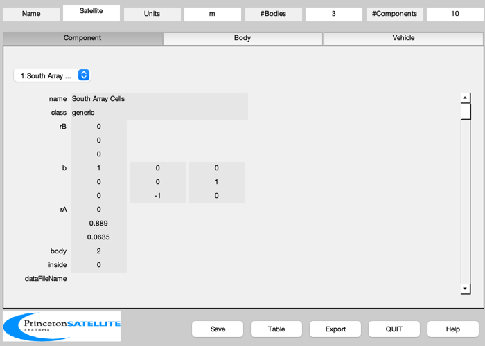
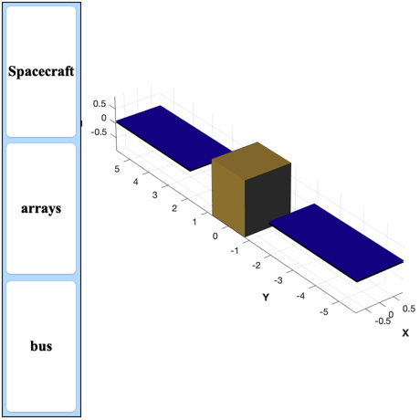

Creates a model for the thermal demo.
The spacecraft has a bus and solar panels with no other components. The resulting file is called SCForImaging.mat and stored in SCModels/. ------------------------------------------------------------------------ See also BuildCADModel, CreateComponent, ArrayPatch, Panels, SaveStructure ------------------------------------------------------------------------
Contents
%------------------------------------------------------------------------------- % Copyright (c) 1998-2003, 2015 Princeton Satellite Systems, Inc. % All rights reserved. %-------------------------------------------------------------------------------
Parameters
%------------ inToM = 0.0254; % Spacecraft dimensions %---------------------- xW = 66*inToM; yW = 62*inToM; zW = 74*inToM;
Initialize
%----------- BuildCADModel( 'initialize' ); BuildCADModel( 'set name' , 'Satellite' ); BuildCADModel( 'set units', 'm' ); clear m;
Create Bodies
%---------------- % Core m = CreateBody('make','name','Core'); BuildCADModel('add body', m ); % Solar arrays m = CreateBody('make','name','South Solar Array','previousBody',1); BuildCADModel('add body', m ); m = CreateBody('make','name','North Solar Array','previousBody',1); BuildCADModel('add body', m ); % This creates the connections between the bodies %------------------------------------------------ BuildCADModel( 'compute paths' );
Components
%------------- dArray.z = 2*76.25*inToM; dArray.x = 2*33*inToM; dArray.nZ = 1; dArray.nX = 1; dArray.theta = 0; [mF, mB] = ArrayPatch( dArray ); % Only use the front of the array mF.v(:,3) = mF.v(:,3) + dArray.z/4; mB.v(:,3) = mB.v(:,3) + dArray.z/4; mF.v(:,2) = -1*inToM; mB.v(:,2) = 1*inToM; b = [1 0 0;0 0 1;0 -1 0]; mass.mass = 10; mass.inertia = diag([10 1 10]); mass.cM = [0;66;0]*inToM; optB.sigmaT = 0; optB.sigmaA = 0.5; optB.sigmaD = 0.5; optB.sigmaS = 0.0; m = CreateComponent( 'make', 'generic', 'vertex', mF.v, 'face', mF.f, ... 'rA', [0 35 2.5]'*inToM, 'b', b, 'name', 'South Array Cells',... 'body', 2, 'mass', mass, 'faceColor', 'solar cell', 'inside', 0 ); BuildCADModel( 'add component', m ); m = CreateComponent( 'make', 'generic', 'vertex', mB.v, 'face', mB.f,... 'rA', [0 35 2.5]'*inToM, 'b', b, 'name', 'South Array Back',... 'body', 2, 'mass', mass,'faceColor', [0 0 0],... 'sigmaT', optB.sigmaT, 'sigmaA', optB.sigmaA,... 'sigmaD', optB.sigmaD, 'sigmaS', optB.sigmaS, 'inside', 0); BuildCADModel( 'add component', m ); mass.cM = [0;-66;0]*inToM; mF.v(:,3) = -mF.v(:,3); mB.v(:,3) = -mB.v(:,3); mF.f = fliplr(mF.f); mB.f = fliplr(mB.f); m = CreateComponent( 'make', 'generic', 'vertex', mF.v, 'face', mF.f,... 'rA', [0 -35 2.5]'*inToM, 'b', b, 'name', 'North Array Cells',... 'body', 3, 'mass', mass, 'faceColor', 'solar cell', ... 'inside', 0 ); BuildCADModel( 'add component', m ); m = CreateComponent( 'make', 'generic', 'vertex', mB.v, 'face', mB.f,... 'rA', [0 -35 2.5]'*inToM, 'b', b, 'name', 'North Array Back',... 'body', 3, 'mass', mass,'faceColor', [0 0 0],... 'sigmaT', optB.sigmaT, 'sigmaA', optB.sigmaA,... 'sigmaD', optB.sigmaD, 'sigmaS', optB.sigmaS, 'inside', 0); BuildCADModel( 'add component', m ); % Core components %---------------- mass.mass = 1000; mass.inertia = diag([1000 1000 1000]); mass.cM = [0;0;0]; % Gold is 1, radiator is 2 sigmaA = [0.05 0.15]; sigmaD = [0.55 0.16]; sigmaS = [0.40 0.69]; id = {'+X' '-X' '+Y' '-Y' '+Z' '-Z'}; optical = {1 1 2 2 1 1}; panelColor = {[1 0.8 0.34] [1 0.8 0.34] [0.2 0.2 0.2] [0.2 0.2 0.2] [1 0.8 0.34] [1 0.8 0.34]}; for k = 1:6 [v, f] = Panels( xW, yW, zW, id{k} ); m = CreateComponent( 'make', 'generic', 'vertex', v, 'face', f, 'rA',[0;0;0],... 'name', sprintf('Panel %s',id{k}), 'body', 1, 'mass', mass, ... 'faceColor', panelColor{k},... 'sigmaT', 0, 'sigmaA', sigmaA(optical{k}),... 'sigmaD', sigmaD(optical{k}), 'sigmaS', sigmaS(optical{k}), 'inside', 0 ); BuildCADModel( 'add component', m ); end BuildCADModel( 'update body mass properties' ); BuildCADModel( 'create body arrays' );
Define subsystems
BuildCADModel( 'add subsystem', 'arrays',... {'South Array Cells','South Array Back',... 'North Array Cells','North Array Back'} ); BuildCADModel( 'add subsystem', 'bus',... {'Panel +X','Panel -X','Panel +Y','Panel -Y','Panel +Z','Panel -Z'} );
Get finished model
%-------------------- s = BuildCADModel('get model'); BuildCADModel('show spacecraft') p = FindDirectory('SCModels'); SaveStructure(s,fullfile(p,'SCForImaging')) %--------------------------------------